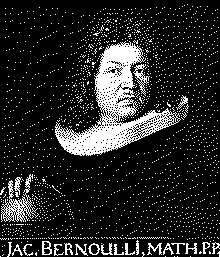

| годы жизни | 1655–1705 |
| страна | Швейцария · Базель |
| область | теория вероятностей · анализ · механика |
| главное | закон больших чисел · число e · Ars Conjectandi · лемниската |
| характер | спорил с братом Иоганном · основатель Бернулли-клана |
Математик который доказал что казино выигрывает всегда.
двадцать лет писал «Ars Conjectandi». умер не завершив. книгу издал племянник.
Якоб Бернулли двадцать лет писал «Ars Conjectandi» — «Искусство предположений»1. Умер в 1705 году не завершив. Книгу опубликовал племянник в 1713 году. В ней — первое строгое доказательство закона больших чисел.
Закон больших чисел2: при n→∞ относительная частота события сходится к его вероятности. Подбрось монету 10 раз — получишь что угодно. Подбрось миллион раз — около 50% орлов. Это не интуиция. Это теорема. Бернулли её доказал.
Следствие: казино при достаточном числе ставок всегда получает ровно тот процент который заложен в правилах. Дисперсия сглаживается. Ожидание реализуется. Лудоманы этого не знали — Бернулли не рекламировал.
Число e3. Бернулли изучал сложные проценты. Если вложить 1 рубль под 100% годовых — через год получишь 2 рубля. Если начислять каждые полгода по 50% — получишь (1 + 1/2)² = 2.25. Если каждый день — (1 + 1/365)^365 ≈ 2.714... При бесконечно частом начислении — предел: lim (1 + 1/n)^n = e ≈ 2.71828...
Это число Бернулли вычислил изучая проценты. Эйлер дал ему имя e — через 30 лет.
Клан Бернулли — самая продуктивная математическая семья. Якоб и брат Иоганн — соперники. Спорили публично. Ненавидели друг друга. Оба — великие математики. Дети Иоганна: Николай, Даниил, Иоганн II. Даниил — принцип Бернулли, гидродинамика, логарифмическая полезность. Дифференциальное уравнение Бернулли — не его, а Якоба (1695): их регулярно путают. Всего 8 выдающихся математиков в трёх поколениях.
Якоб также изучал кривые. Лемниската Бернулли — кривая в форме восьмёрки. ∞. Отдельно он занимался логарифмической спиралью и был поражён её свойством: при масштабировании, повороте, инверсии она остаётся собой. Её он и завещал выгравировать на надгробии с надписью «Eadem mutata resurgo» — «Изменённая восстаю той же самой». Камнерез выгравировал обычную спираль по ошибке4.